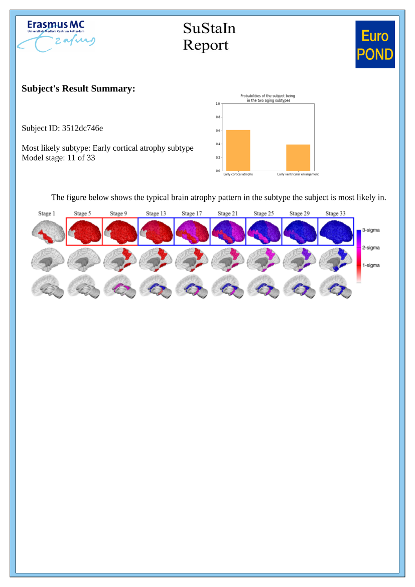

Web Application for finding your brain aging subtype¶
This page is a static html file used to demonstrate how to use the web application. Click here for using this application on google colaboratory platform.¶
# Install the tools needed.
!apt-get install poppler-utils
!pip install git+https://github.com/subtypes-in-aging-brain/aging-subtype-interface.git
Reading package lists... Done
Building dependency tree
Reading state information... Done
The following NEW packages will be installed:
poppler-utils
0 upgraded, 1 newly installed, 0 to remove and 40 not upgraded.
Need to get 154 kB of archives.
After this operation, 613 kB of additional disk space will be used.
Get:1 http://archive.ubuntu.com/ubuntu bionic-updates/main amd64 poppler-utils amd64 0.62.0-2ubuntu2.12 [154 kB]
Fetched 154 kB in 1s (174 kB/s)
Selecting previously unselected package poppler-utils.
(Reading database ... 160837 files and directories currently installed.)
Preparing to unpack .../poppler-utils_0.62.0-2ubuntu2.12_amd64.deb ...
Unpacking poppler-utils (0.62.0-2ubuntu2.12) ...
Setting up poppler-utils (0.62.0-2ubuntu2.12) ...
Processing triggers for man-db (2.8.3-2ubuntu0.1) ...
Collecting git+https://github.com/subtypes-in-aging-brain/aging-subtype-interface.git
Cloning https://github.com/subtypes-in-aging-brain/aging-subtype-interface.git to /tmp/pip-req-build-1uwbjduc
Running command git clone -q https://github.com/subtypes-in-aging-brain/aging-subtype-interface.git /tmp/pip-req-build-1uwbjduc
Requirement already satisfied: pandas in /usr/local/lib/python3.7/dist-packages (from aging-subtype-interface==0.1) (1.1.5)
Requirement already satisfied: numpy in /usr/local/lib/python3.7/dist-packages (from aging-subtype-interface==0.1) (1.19.5)
Requirement already satisfied: scikit-learn in /usr/local/lib/python3.7/dist-packages (from aging-subtype-interface==0.1) (0.22.2.post1)
Requirement already satisfied: scipy in /usr/local/lib/python3.7/dist-packages (from aging-subtype-interface==0.1) (1.4.1)
Requirement already satisfied: matplotlib in /usr/local/lib/python3.7/dist-packages (from aging-subtype-interface==0.1) (3.2.2)
Collecting fpdf
Downloading fpdf-1.7.2.tar.gz (39 kB)
Collecting pdf2image
Downloading pdf2image-1.16.0-py3-none-any.whl (10 kB)
Collecting wget
Downloading wget-3.2.zip (10 kB)
Requirement already satisfied: opencv-python in /usr/local/lib/python3.7/dist-packages (from aging-subtype-interface==0.1) (4.1.2.30)
Requirement already satisfied: scikit-image in /usr/local/lib/python3.7/dist-packages (from aging-subtype-interface==0.1) (0.16.2)
Requirement already satisfied: cloudpickle in /usr/local/lib/python3.7/dist-packages (from aging-subtype-interface==0.1) (1.3.0)
Requirement already satisfied: pyparsing!=2.0.4,!=2.1.2,!=2.1.6,>=2.0.1 in /usr/local/lib/python3.7/dist-packages (from matplotlib->aging-subtype-interface==0.1) (2.4.7)
Requirement already satisfied: cycler>=0.10 in /usr/local/lib/python3.7/dist-packages (from matplotlib->aging-subtype-interface==0.1) (0.10.0)
Requirement already satisfied: python-dateutil>=2.1 in /usr/local/lib/python3.7/dist-packages (from matplotlib->aging-subtype-interface==0.1) (2.8.1)
Requirement already satisfied: kiwisolver>=1.0.1 in /usr/local/lib/python3.7/dist-packages (from matplotlib->aging-subtype-interface==0.1) (1.3.1)
Requirement already satisfied: six in /usr/local/lib/python3.7/dist-packages (from cycler>=0.10->matplotlib->aging-subtype-interface==0.1) (1.15.0)
Requirement already satisfied: pytz>=2017.2 in /usr/local/lib/python3.7/dist-packages (from pandas->aging-subtype-interface==0.1) (2018.9)
Requirement already satisfied: pillow in /usr/local/lib/python3.7/dist-packages (from pdf2image->aging-subtype-interface==0.1) (7.1.2)
Requirement already satisfied: networkx>=2.0 in /usr/local/lib/python3.7/dist-packages (from scikit-image->aging-subtype-interface==0.1) (2.5.1)
Requirement already satisfied: imageio>=2.3.0 in /usr/local/lib/python3.7/dist-packages (from scikit-image->aging-subtype-interface==0.1) (2.4.1)
Requirement already satisfied: PyWavelets>=0.4.0 in /usr/local/lib/python3.7/dist-packages (from scikit-image->aging-subtype-interface==0.1) (1.1.1)
Requirement already satisfied: decorator<5,>=4.3 in /usr/local/lib/python3.7/dist-packages (from networkx>=2.0->scikit-image->aging-subtype-interface==0.1) (4.4.2)
Requirement already satisfied: joblib>=0.11 in /usr/local/lib/python3.7/dist-packages (from scikit-learn->aging-subtype-interface==0.1) (1.0.1)
Building wheels for collected packages: aging-subtype-interface, fpdf, wget
Building wheel for aging-subtype-interface (setup.py) ... ?25l?25hdone
Created wheel for aging-subtype-interface: filename=aging_subtype_interface-0.1-py3-none-any.whl size=6458 sha256=836b2e984d131b6f56ba74a6461fa7f1676e26edec6674b5f3fb452d7de40cc3
Stored in directory: /tmp/pip-ephem-wheel-cache-a4hzpykh/wheels/3d/00/d2/6f8619d629a6816d22ac8f37d0c2352a0fe12bff99d3ab7469
Building wheel for fpdf (setup.py) ... ?25l?25hdone
Created wheel for fpdf: filename=fpdf-1.7.2-py2.py3-none-any.whl size=40722 sha256=95c059d86c96632b9a87072998b11c8a23bd08a43c8e8e58c64ae37a37cc17b4
Stored in directory: /root/.cache/pip/wheels/d7/ca/c8/86467e7957bbbcbdf4cf4870fc7dc95e9a16404b2e3c3a98c3
Building wheel for wget (setup.py) ... ?25l?25hdone
Created wheel for wget: filename=wget-3.2-py3-none-any.whl size=9673 sha256=e784764f61fd9f59797494ca7be1a4523b5d794d08fbf32dba13c657d0d2d971
Stored in directory: /root/.cache/pip/wheels/a1/b6/7c/0e63e34eb06634181c63adacca38b79ff8f35c37e3c13e3c02
Successfully built aging-subtype-interface fpdf wget
Installing collected packages: wget, pdf2image, fpdf, aging-subtype-interface
Successfully installed aging-subtype-interface-0.1 fpdf-1.7.2 pdf2image-1.16.0 wget-3.2
# Enter the Freesurfer volumes of the different regions. The minimum and maximum
# values permitted are determined by the values encountered in the Rotterdam study
# Note: Adjust the slider based on your values and press shift + Enter
import random
SubjectID = '%010x' % random.randrange(16**10) # Generate a random subject ID for your own records
print('Your randomly generated Subject ID is:',str(SubjectID))
IntracranialCavity = 1504720 #@param {type:"slider", min:994598, max:2171845, step:1}
TotalBrain = 1181732 #@param {type:"slider", min:684784, max:1393898, step:1}
Ventricles = 44184 #@param {type:"slider", min:7163, max:193460, step:1}
Hippocampus = 8991 #@param {type:"slider", min:4019, max:11130, step:1}
Precuneus = 18735 #@param {type:"slider", min:10784, max:26559, step:1}
MiddleTemporal = 25016 #@param {type:"slider", min:11600, max:32870, step:1}
Fusiform = 21162 #@param {type:"slider", min:10833, max:27049, step:1}
Entorhinal = 3092 #@param {type:"slider", min:1449, max:7714, step:1}
FrontalCortex = 159079 #@param {type:"slider", min:69371, max:183637, step:1}
ParietalCortex = 118368 #@param {type:"slider", min:58665, max:175710, step:1}
TemporalCortex = 113450 #@param {type:"slider", min:49413, max:148443, step:1}
OccipitalCortex = 52356 #@param {type:"slider", min:23219, max:70222, step:1}
Your randomly generated Subject ID is: 3512dc746e
import AgingSubtypeInterface as asi
from AgingSubtypeInterface import predict
Features = [TotalBrain, Ventricles, Hippocampus, Precuneus, MiddleTemporal, Fusiform, Entorhinal, FrontalCortex,
ParietalCortex, TemporalCortex, OccipitalCortex]
prediction=predict.aging_subtype(Features, IntracranialCavity)
asi.create_report(SubjectID, prediction)

# You can send the report from your email address to someone else using this piece of code.
# Password entered here is not stored anywhere.
# This piece of code has been tested only on gmail.
# Please make sure to enable logging in to your gmail using applications: https://myaccount.google.com/lesssecureapps
# If you still get an error with this enable this: https://accounts.google.com/DisplayUnlockCaptcha
asi.email_report('your@email_id.com','password','Recipient@email_id.com')